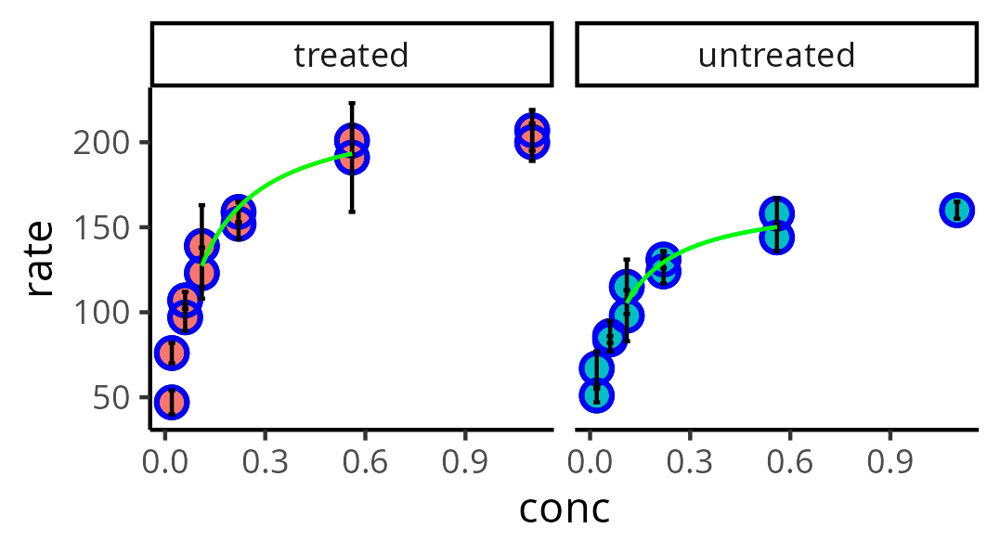

### Layer structure for ScriptRplot
1. Data load - data loading;
2. Reshape - optional conversion of data from Wide to Long format required by the package;
3. Preamble - preliminary transformations in the data set (currently, only an optional conversion of a numeric variable to a categorical variable);
4. Dataset - assignment of dependent and independent variables
5. Grouping - assignment of group variable;
6. Error bar - error bar and formatting;
7. Symbol - type and assignments for symbols;
8. Line - type and assignments for lines;
9. Curve - mathematical trend lines and formatting;
10. Other plots - optional assignments for bars, histograms, data matrix graphs, mathematical curve simulation, and panel presentation;
11. Axis - axis assignment (primary and secondary);
12. Lines - addition and formatting of vertical and horizontal lines;
13. Zoom - coverage level of the graph axes;
14. Additional color scale - additional color palettes;
15. Additional expression - optional additive expressions;
16. Legend - formatting captions;
17. Caption - formatting labels (titles, subtitles);
18. Text - inserting and positioning text; ScriptRplot
ScriptRplot, a corruption of script with
R for the production of plots, allows the production of graphs with the ggplot2 package from R using text commands, even without knowledge of the syntax of the language or the package.The ggplot2 package, as mentioned in the R section of this website, is part of a data analysis and visualization ecosystem called Tidyverse, whose resources are loaded by a package of the same name. The grammatical structure of the library allows the production of high-quality graphics for technical and scientific publication, as illustrated on several pages on the web.
Unlike the conventional R programming syntax and the package’s graphics system, ScriptRplot provides users with the necessary adjustments for plotting in natural language. Nevertheless, it also provides the complete line of commands for compiling the desired graph.
The script was designed by itemizing the seven layers proposed in Wilkinson’s grammar of graphics 1 present in the ggplot2 package, but dispersed in an authorial sequence itemized for the creation of the graph, as follows:
For each item listed above, ScriptRplot offers a quick comment on the possibilities for insertion, which reinforces its seal of approval for Reproducible Teaching.
This way, it is possible to experiment with different variations for plotting, while allowing for a gradual and even playful appropriation of the syntax required by
ggplot2; although this is not necessary for compiling the graph, as only the sequential and optional insertion of its elements is required. Once the graphic elements have been configured textually, ScriptRplot continues to convert the user variables into variables for interpretation by the R compiler. The variables converted from the graphic components are shown below.| Element | Object | Command |
|---|---|---|
| Mapping | main | ggplot(data=dataset, mapping) |
| Title and Legend | titles | theme(plot.title = …, plot.caption = …) |
| Labels | labels | labs(x=…, y=…, title=…, …) |
| Error Bars | error_bar | geom_errorbar(… aes(ymin=y-error_down, ymax=y+error_up)) |
| Legend | plot_legend | theme(legend.title=…, legend.position=…, …) |
| Guides | legend_guide | guides(colour=…, size=…, …) |
| Text Annotation | annotation | annotate(“text”, x=…, y=…, label=…, parse=TRUE) |
| Axis Values | axis_values | theme(axis.text.x=…, axis.text.y=…) |
| Axis Labels | axis_labels | theme(axis.title.x=…, axis.title.y=…) |
| Zoom | axis_lim | coord_cartesian(xlim=c(x_min,x_max), ylim=c(y_min,y_max)) |
| Horizontal Line | line_add_horiz | geom_hline(yintercept=…, …) |
| Vertical Line | line_add_vert | geom_vline(xintercept=…, …) |
| Sloped Line | line_add_incl | geom_abline(intercept=…, slope=…, …) |
| Type 1 - All points | type_allpoints | allpoints(shape=…, color=…, …) |
| Type 2 - Clustering | type_group | grouping(stroke=…, aes(shape=…, …)) |
| Statistical summary | summary_stats | stat_summary(fun.data=…, fun=…, …) |
| Line 1 - All points | line_all | geom_line(size=…, alpha=…, …) |
| Line 2 - Clustering | line_group | geom_line(size=…, aes(…)) |
| Curve 1 - All points | curve_all | geom_smooth(data=subset(…), method=…, aes(…)) |
| Curve 2 - Clustering | curve_group | geom_smooth(data=subset(…), method=…, aes(…)) |
| Bar/Histogram | bar_hist | hist_bar(stat=…, bins=…, aes(…)) |
| Simulation | simul | simulation(fun=…, geom=…, …) |
| Main Command | p_main | main + theme_plot + … + bar_hist + … |
| Add-ons | p | p_main + axis_inversion + … + simul + legend_inversion |
Source code for ScriptRplot
The following code is for free distribution and adaptation with ScriptRplot. The code allows you to build a graph from data loaded by the user in the script itself, and provided below. Remember: the data for the graph must be in the same session directory as RStudio, and together with the script.
Download
When compiled, the script results in the following graph, for visualization of the kinetic activity in puromycin inhibition assay.
Note that the graph shows the insertion of 1) multivariate data, with 2) symbols and 3) defined thickness, 4) distinct types, 5) fill and 6) distinct colors for each subset, 7) error bars, 8) panel layout, 9) specific configuration and theme, and 10) nonlinear adjustment in subsets for each level of data, and by equation introduced by the user.

And most importantly: despite the complexity involved in visualizing the data, scriptRplot allows the graph to be constructed without knowledge of the syntax of the R programming language or the package involved (
ggplot2). Thus, it is sufficient to “run” the script, although modification is plausible and desirable. All these unique features combine to offer Reproducible Teaching aimed at constructing elegant graphs.Notas de rodapé
Wickham, Hadley. “A layered grammar of graphics.” Journal of computational and graphical statistics 19.1 (2010): 3-28.↩︎